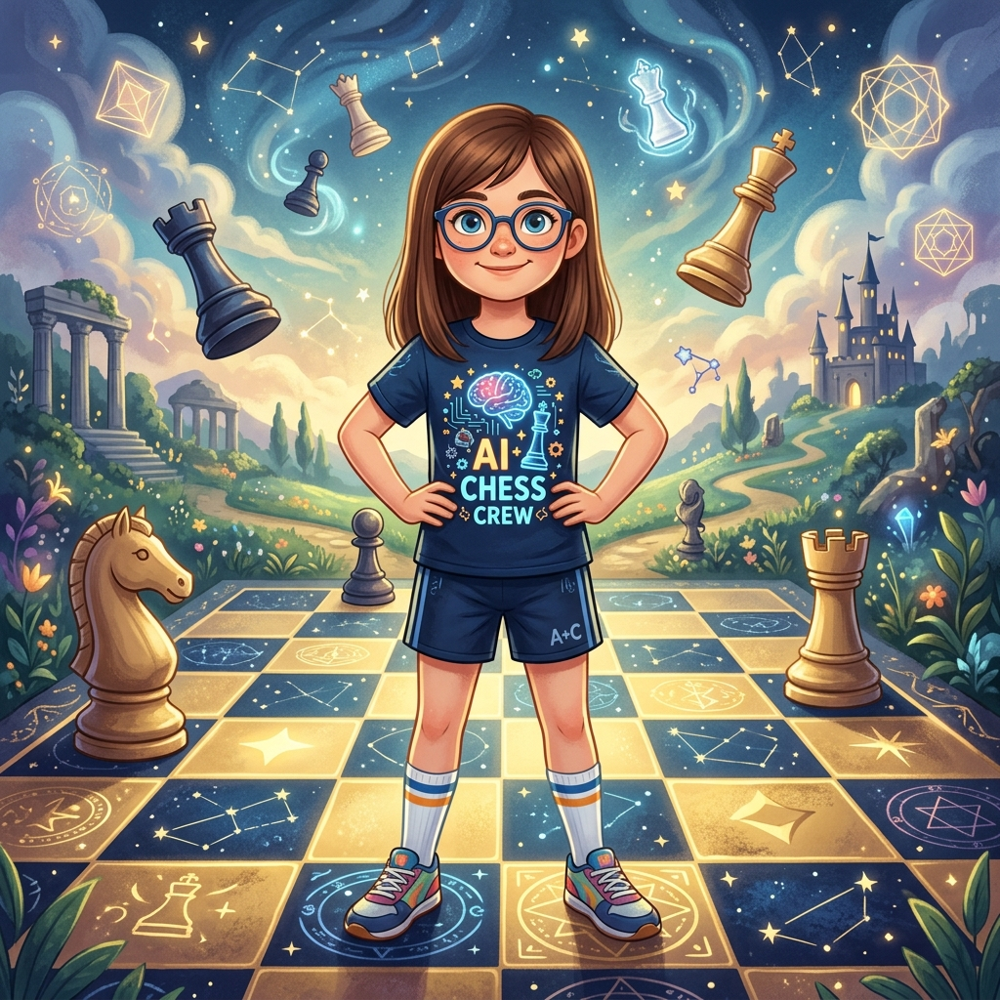
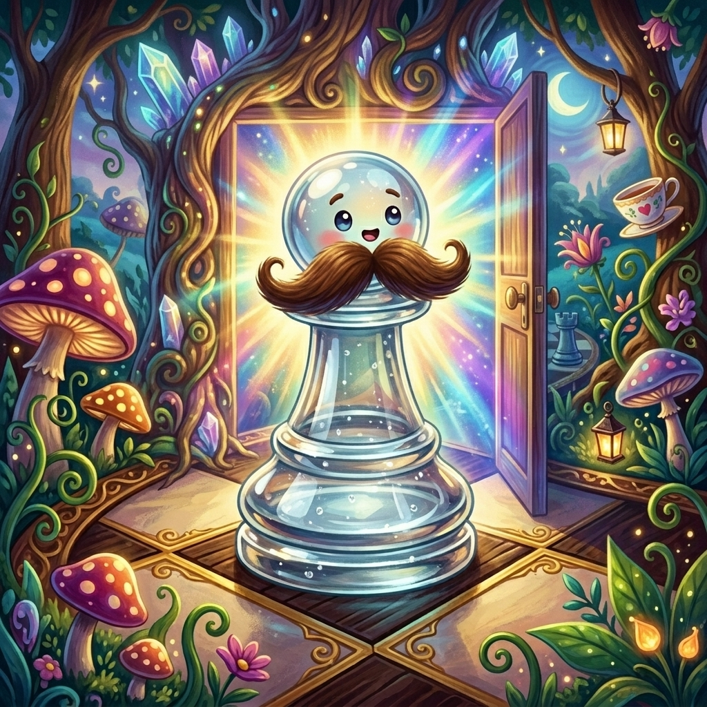
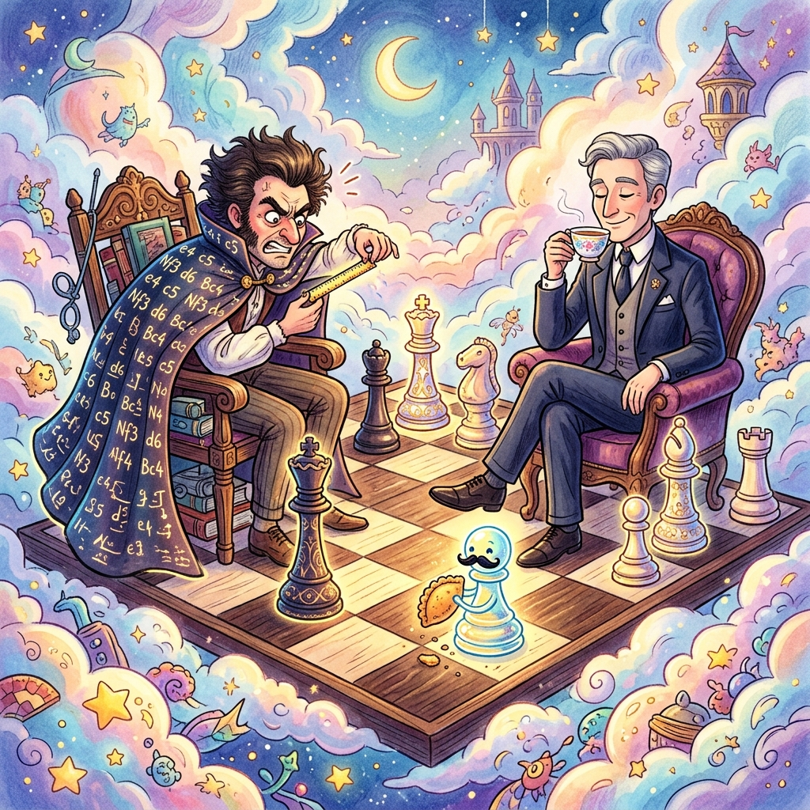
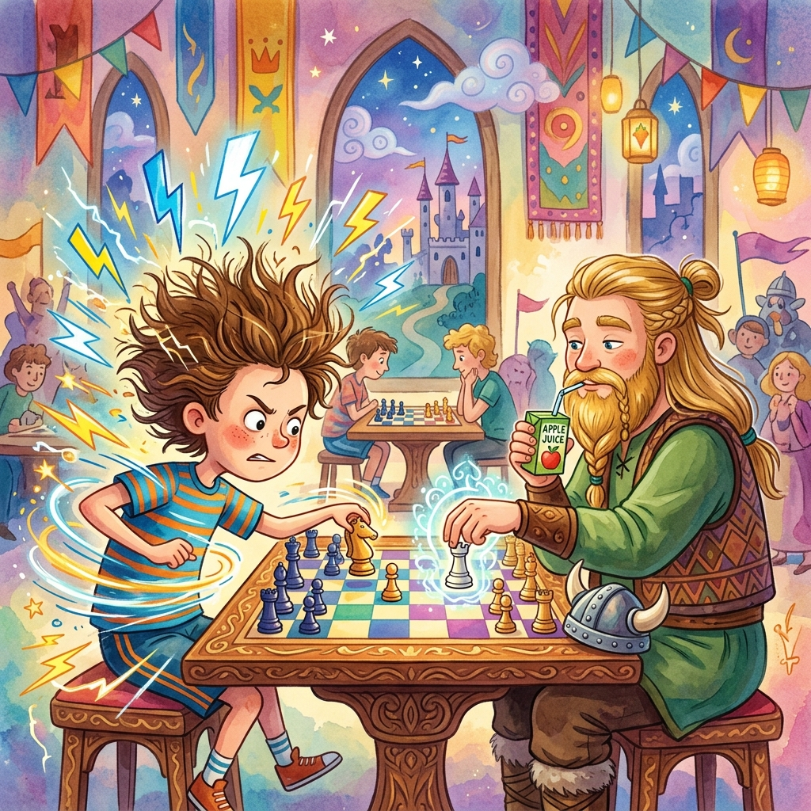
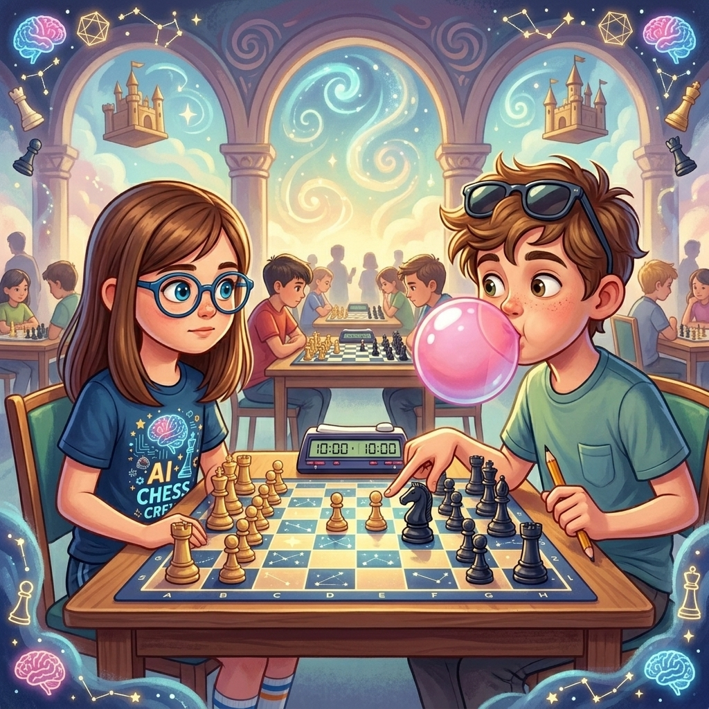
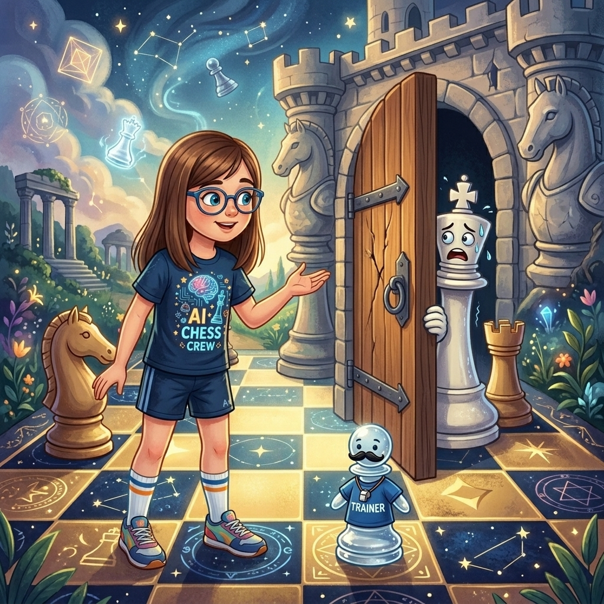
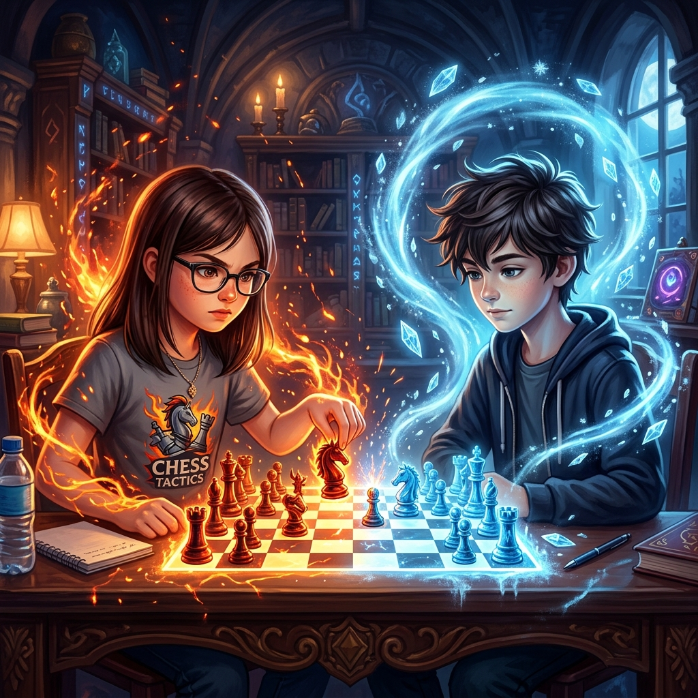

Bienvenida, Martina
Cada noche, un reino te espera al otro lado del tablero.
🌟 Elige tu aventura 🌟

♟️ El Primer Movimiento
Martina despierta en un tablero infinito donde la Reina de las Sombras ha prohibido los jaques mates.
Leer cuento →
⏱️ Tic, Tac, Jaque Mate
Primer torneo escolar. Martina enfrenta a un rival que juega a la velocidad del rayo y le enseña una lección.
Leer cuento →
🔒 La Clavada del Alfil Exiliado
El Alfil desterrado ha vuelto con un arma secreta: congela a quien mira. Martina deberá jugar como Paul Morphy para liberar al reino.
Leer cuento →
🐴 El Caballo Salvaje
Torneo lleno de niños therian. Martina enfrenta a Equis, un caballo salvaje cuyo galope domina el tablero.
Leer cuento →
👑 La Coronación de Peoncito
Peoncito está a una casilla de la octava fila. Todos quieren decirle en qué convertirse. Martina le enseña que elegir es entender la posición.
Leer cuento →
🔍 La Jugada Invisible
Primer torneo nacional. Martina estudia a su rival, prepara una línea secreta contra la Siciliana, y descubre que ganar empieza la noche anterior.
Leer cuento →
⚡ El Pescador y el Elegante
Dos leyendas del ajedrez descienden al reino. Roberto Pescador mide sillas, Boris el Sereno aplaude a su rival. Zugzwang.
Leer cuento →
⚡ El Relámpago y el Vikingo
Torneo de blitz. Hans calcula 200 líneas antes del desayuno, Magnus elige entre jugo de manzana o pera. Instinto vs cálculo.
Leer cuento →
🕳️ La Sombra que Jugaba
Aparece una sombra que tuerce las reglas. Martina juega la Inmortal de Anderssen y gana, pero la sombra no se irá del todo.
Leer cuento →
💢 Lo Que No Se Ve en el Tablero
Pablo habla, estornuda de mentira, mueve piezas y gana. Martina pierde. Pero descubre que no es la partida lo que importa, sino volver.
Leer cuento →
👑 La Última Grieta
El Rey Blanco lleva 800 años sin moverse. Peoncito, entrenador personal, y Martina le enseñan que los reyes también atacan en el final.
Leer cuento →
💃 El Peón que Bailaba
Torneo de verano. Inés tiembla al tocar su primer peón. Martina le enseña que un peón aislado es un bailarín, no un defecto.
Leer cuento →
📖 Lo Que Estaba Escrito
La Sombra termina su cuaderno y le muestra a Martina lo que se avecina: un rival silencioso que ya está en camino.
Leer cuento →
❄️ Hielo que Quema
León llegó sin ruido. Nunca celebra, nunca duda. Hasta que jugó contra Martina y descubrió lo que era un rival de verdad.
Leer cuento →Próximamente
Una nueva aventura está por llegar…